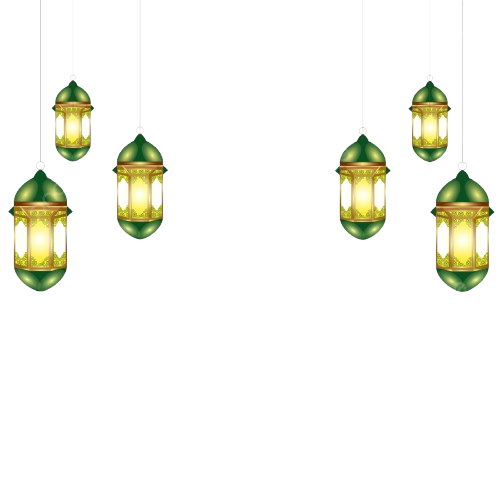
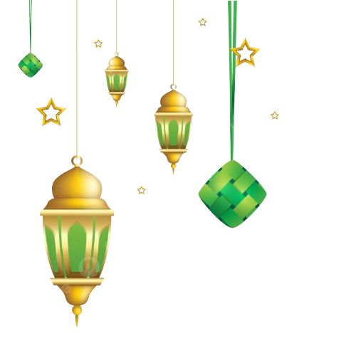

Idul Fitri 1447 H
Mohon Maaf Lahir dan Batin.
Keluarga Sularsito
Tangan tak sempat menjabat, mata tak sempat bertatap. Dalam kerendahan hati, ada ketinggian budi. Dalam kemiskinan harta, ada kekayaan jiwa. Izinkan kami sekeluarga memohon maaf atas segala khilaf dan salah. Selamat Hari Raya Idul Fitri 1447 H, Minal Aidin Wal Faizin.